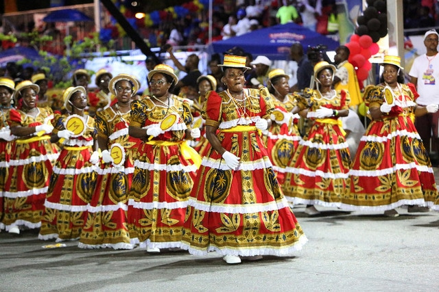

Contents
- About Nigeria
- Cities in Nigeria
- Cultures of Nigeria
- Facts about Nigeria
- National anthem
- Explore More
.webp)
President
BOLA AHMEDCapital city
ABUJAAbout Nigeria
Nigeria is a large country located in West Africa and is the most populous country in Africa. It is bordered by Benin, Niger, Chad, and Cameroon, with a coastline along the Atlantic Ocean. The capital city is Abuja, while the largest city and economic center is Lagos.
Nigeria gained independence from British colonial rule in 1960. It is a federal republic with English as the official language, but it also has over 500 local languages, including Hausa, Yoruba, and Igbo.
The country has a strong and diverse economy. It is one of the largest oil producers in Africa, and also has important sectors like agriculture, telecommunications, and entertainment. Nigeria is especially known for its film industry, popularly called “Nollywood,” which is one of the biggest in the world.
Nigeria has rich cultural diversity with many ethnic groups, traditions, music styles, and festivals. Popular music genres like Afrobeats have gained global recognition.

- Abuja
- The capital city and political center of Nigeria.
- Lagos
- The biggest city and main economic hub.
- Kano
- One of the oldest cities and a major trade center.
- Port Harcourt
- A major oil and industrial city.
- Jos
- Known for its cool climate and scenery.
Cultures of Nigeria
Nigeria is one of the most culturally diverse countries in Africa, with over 250 ethnic groups. The largest groups include the Hausa, Yoruba, and Igbo, each with its own language, traditions, and customs. This diversity makes Nigeria rich in cultural expression and heritage.
Music and dance are very important in Nigerian culture. Traditional drums, storytelling, and modern music styles like Afrobeats are popular both locally and internationally. Nigerian artists are widely known across the world for their creativity and influence.
Festivals play a big role in cultural life. Events such as the Osun-Osogbo Festival, Durbar Festival, and New Yam Festival bring communities together to celebrate history, religion, and harvest seasons.
Traditional clothing varies by region. The Yoruba often wear agbada, the Hausa wear babban riga, and the Igbo wear isiagu or colorful wrappers. These outfits are often worn during celebrations, weddings, and cultural events.
Nigerian cuisine is rich and flavorful. Popular foods include jollof rice, pounded yam, egusi soup, and suya. Meals are often shared, showing strong family and community values.
Family, respect for elders, and hospitality are very important in Nigerian society. Nigeria is also known for its film industry, Nollywood, which is one of the largest in the world.
.webp)

| Fact | Description |
|---|---|
| Location | Nigeria is located in West Africa along the Atlantic Ocean. |
| Capital City | The capital city is Abuja. |
| Population | Nigeria is the most populous country in Africa. |
| Independence | Nigeria gained independence from Britain in 1960. |
| Languages | English is the official language, with over 500 local languages. |
| Economy | Nigeria is one of Africa’s largest oil producers. |
| Culture | Nigeria has over 250 ethnic groups with diverse traditions. |
| Major City | Lagos is the largest city and economic center. |
| Entertainment | Nigeria is home to Nollywood, one of the largest film industries. |